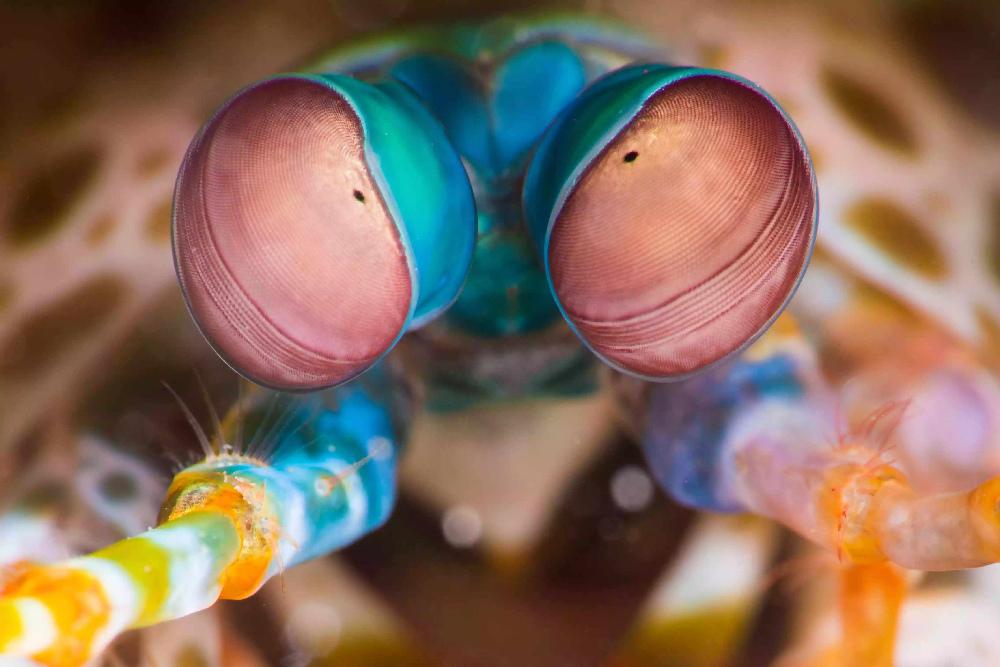
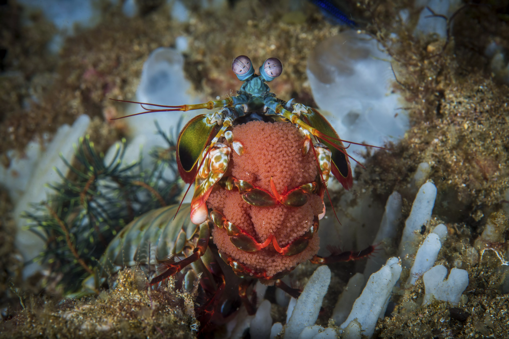

Fatos interessantes sobre o Stomatopoda
Fatos sobre o Stomatopoda

Visão
Stomatopods have the most complex vision in the animal kingdom, even exceeding that of butterflies. The mantis shrimp has compound eyes mounted on stalks, and can swivel them independently of one another to survey its surroundings. While humans have three types of photoreceptors, a mantis shrimp's eyes have between 12 and 16 types of photoreceptor cells. Some species can even tune the sensitivity of their color vision.

Distribution
The mantis shrimp lives in tropical and subtropical waters worldwide. Most species live in the Indian and Pacific Oceans. Some species live in temperate marine environments. Stomatopods build their burrows in shallow water, including reefs, canals, and marshes.
Behavior
Mantis shrimps are highly intelligent. They recognize and remember other individuals by sight and smell, and they demonstrate an ability to learn. The animals have a complex social behavior, which includes ritualized fighting and coordinated activities between members of a monogamous pair. They use fluorescent patterns to signal each other and possibly other species.
Reproduction and Life Cycle
On average, a mantis shrimp lives 20 years. During its lifetime, it may breed 20 to 30 times. In some species, the only interaction between males and females occurs during mating. The female either lays eggs in her burrow or carries them around with her. In other species, shrimp mate in monogamous, life-long relationships, with both sexes caring for the eggs. After hatching, offspring spend three months as zooplankton before molting into their adult form.
